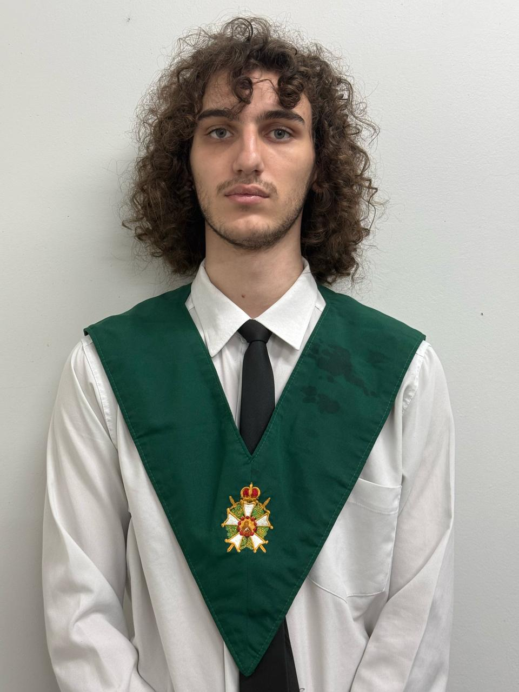

Sobre Mim
Paulo Sergio Gomes Fontana
Engenharia de Software
Sou estudante de Engenharia de Software no câmpus UTFPR em Dois Vizinhos e estou sempre em busca de expandir meus conhecimentos. Desde 2021, faço parte da Ordem DeMolay, onde desenvolvi habilidades organizacionais e de trabalho em equipe, além de atuar como tesoureiro, onde aprendi um pouco sobre Excel. Tenho experiência prática com desenvolvimento web, tendo concluído cursos na Alura e OneBitCode. Além disso, minhas conquistas na OBMEP, incluindo duas medalhas de bronze e menções honrosas, me proporcionaram uma experiência enriquecedora no raciocínio lógico e pensamento matemático, através da participação no Programa de Iniciação Científica Jr. (PIC), com bolsa do CNPq, na UTFPR de Pato Branco.